Shikoku Pilgrimage
Walk the ancient circuit of 88 temples around the island of Shikoku.
There are 1,200 km between the two ends of the Shikoku Pilgrimage, and Okuboji is the far one. The first landmark is Ryozenji (Temple 1). At 5,000 steps a day it's about 48 weeks of the walking you do anyway. All 42 landmarks are below, in walking order, with a photograph and the story of the place.
- 1,200km end to end
- 42landmarks
- 48 weeksat 5,000 steps a day
- Okubojifinishes at

The landmarks of Shikoku Pilgrimage
42 landmarks, in walking order. Each photograph is by the person credited beneath it, used as they licensed it.
-
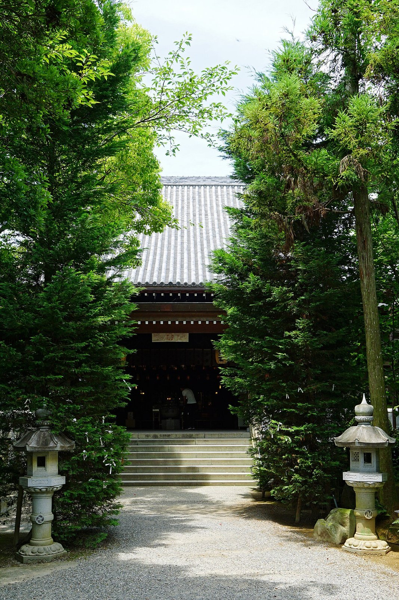
Photo: 663highland · Wikimedia Commons, CC BY 2.5 Ryozenji (Temple 1)
The gate of Ryozenji in Naruto marks the first of the eighty-eight temples and the traditional start of the Ohenro. Pilgrims here take up the white robe, the conical sedge hat and the staff said to embody Kobo Daishi himself before ringing the temple bell. Twelve hundred kilometres around the whole island of Shikoku lie ahead.
-
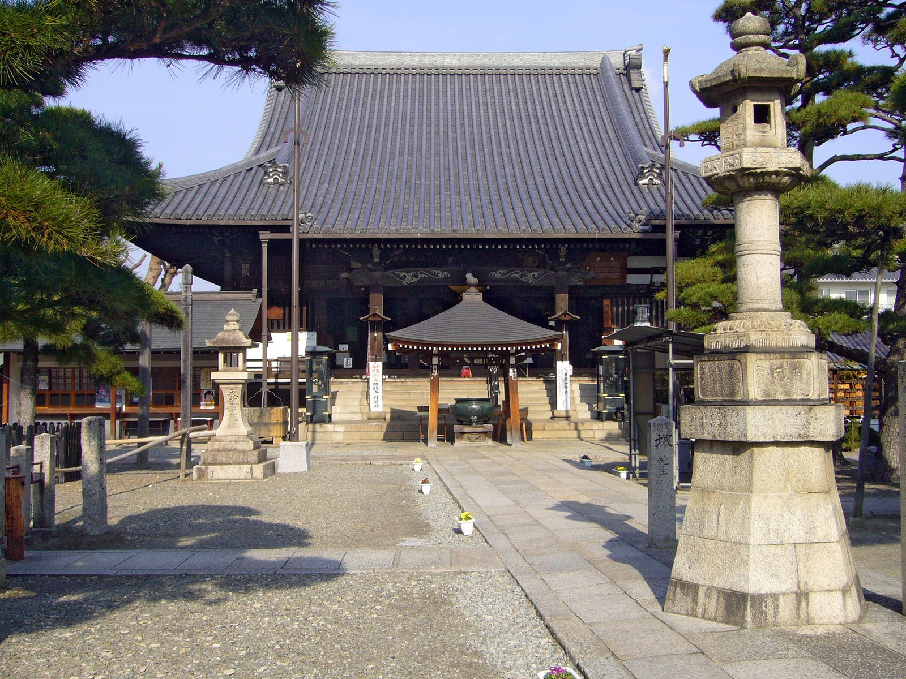
Photo: 663highland · Wikimedia Commons, CC BY 2.5 Fujiidera (Temple 11)
Fujiidera sits among the wisteria that gives it its name, on the bank of the Yoshino River. It is the last easy temple before the climb, where the path turns up into the mountains. Pilgrims have rested in this quiet valley for centuries before the hard ascent that follows.
-
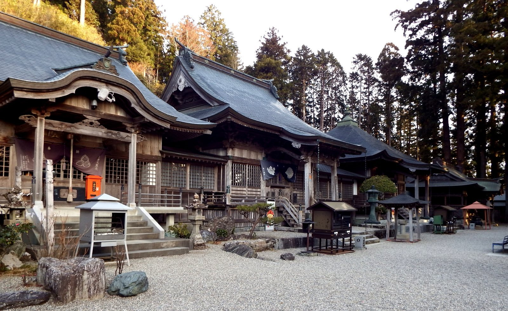
Photo: Dokudami · Wikimedia Commons, CC BY-SA 4.0 Shosanji (Temple 12)
At 800 metres, Shosanji is the first true mountain temple and the most feared of the early stages, a climb pilgrims call henro korogashi, the place that makes pilgrims fall down. Hundreds of stone steps and rough forest trail rise through towering cedars to the hall, where cold mountain air marks the reward for a hard ascent.
-
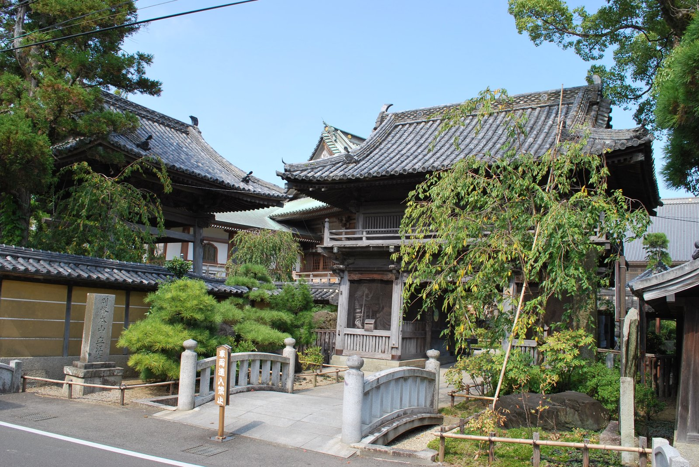
Photo: Reggaeman · Wikimedia Commons, CC BY-SA 3.0 Tatsueji (Temple 19), Komatsushima
Beyond the river plain lies the quiet courtyard of Tatsueji, known to pilgrims as the sekisho or barrier temple of Tokushima, where the sincere are said to pass and the false-hearted are turned back. An old tale tells of a woman whose hair caught fast in the temple bell rope until she repented here.
-
Anan and the Tachibana coast
Anan is the last real town before the long, lonely coast, a deep bay sheltering fishing boats where the air turns to salt. It is the final chance to fill water and buy rice balls, for the road south thins out fast. From the harbour the way climbs away toward Tairyuji on its high ridge.
-
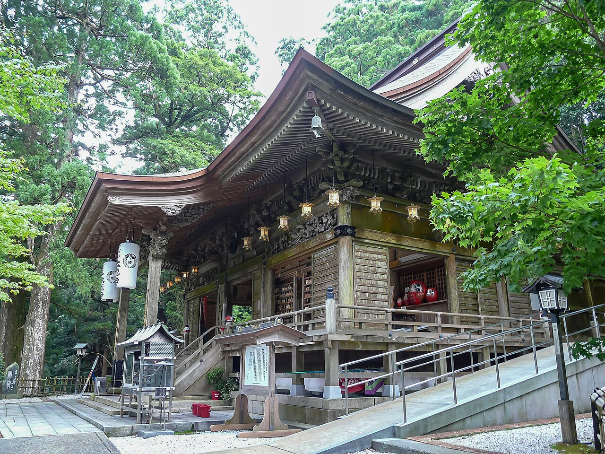
Photo: Naokijp · Wikimedia Commons, CC BY-SA 4.0 Tairyuji (Temple 21)
Thousand-year-old cedars and cypress surround Tairyuji, the Temple of the Great Dragon, perched at 620 metres. Here the young Kukai is said to have recited the Kokuzo mantra a million times, the discipline that began his path to becoming Kobo Daishi. Its mountain solemnity earns it the name Koyasan of the West.
-
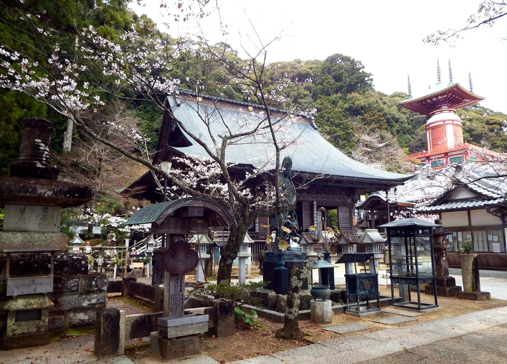
Photo: Araiyasushige · Wikimedia Commons, CC0 Yakuoji (Temple 23)
Above the fishing town of Hiwasa stands Yakuoji, the last temple in Tokushima and famed for warding off misfortune. Pilgrims climb its two staircases, one of forty-two steps and one of thirty-three, leaving a coin on each year of unlucky age. Below, the sea opens wide. Ahead lies Kochi, the long stage of ascetic training.
-
Sakihama Beach
Sakihama is a long curve of grey sand where pilgrims have rested before the empty miles ahead, and where shops grow scarce enough that guidebooks warn to stock food. Loggerhead turtles still haul ashore on stretches of this coast to lay their eggs in summer, before the shoreline bends south.
-
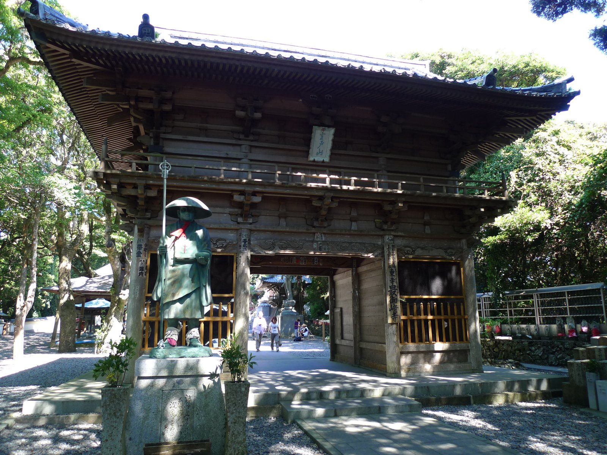
Photo: Motokoka · Wikimedia Commons, CC BY-SA 4.0 Hotsumisakiji (Temple 24), Cape Muroto
The wild Pacific hammers the black volcanic rock of Cape Muroto, and at its tip climbs Hotsumisakiji. In a sea cave below, the young Kukai meditated until only sky and sea remained in his sight, taking his name Kukai, meaning sky and sea, from this very place. The headland closes the long, lonely coast of Kochi.
-
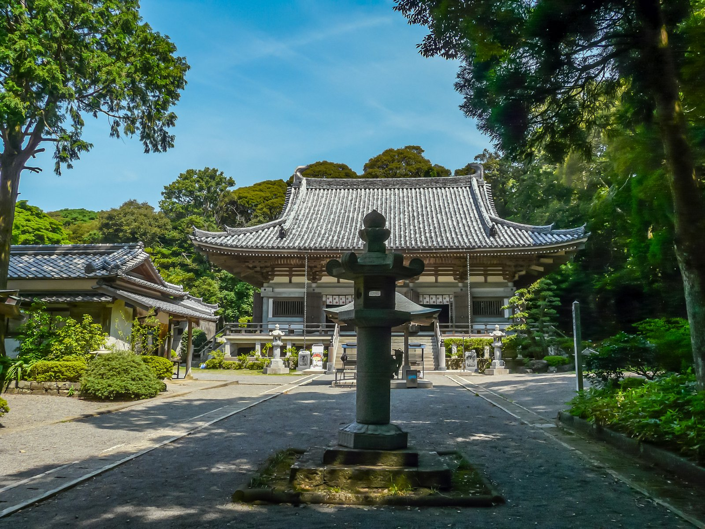
Photo: Naokijp · Wikimedia Commons, CC BY-SA 4.0 Kongochoji (Temple 26), Muroto Sanzan
Higher above Cape Muroto stands Kongochoji, the loftiest of the three Muroto Sanzan temples, set among cedars with the whole sweep of sea below. With Hotsumisakiji and Shinshoji it marks the headland where the young Kukai is said to have trained in a cliff cave, watching sky and ocean meet. Inland lies the long pull toward Konomineji.
-
Kiragawa old town
Kiragawa is a preserved district of plastered white storehouses and lattice fronts, built on the wealth of charcoal and timber shipped from this coast. The thick lime walls were raised to resist both fire and the typhoons that batter the cape. Its narrow lanes run back toward the seawall and the road on to Nahari.
-
Cape Hane Lighthouse
On the western shore of the Muroto peninsula, Cape Hane carries a small white lighthouse above black wave-cut rock, the road clinging to the very edge of the land. The great cape lies behind now, and the shoreline bends gently north toward Nahari, freighters passing far out on the wind.
-
Nahari fishing port
Nahari is a working port where the morning catch comes ashore and the little Asa railway runs out to its terminus. The town sits where mountain streams meet the bay, a welcome patch of shops and warm food after the cape. From here the coast and river road lead on toward the climb to Konomineji.
-
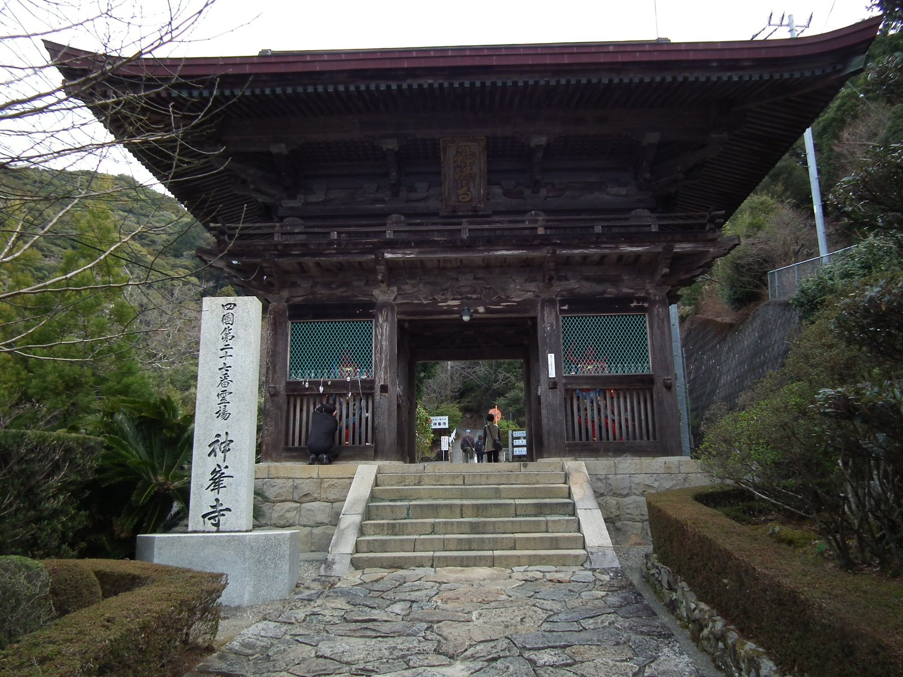
Photo: 松岡明芳 · Wikimedia Commons, CC BY-SA 3.0 Konomineji (Temple 27)
A steep haul lifts the path to Konomineji, perched high on a forested shoulder of mountain with views back over the Tosa coast. Its flower garden is famous, and pilgrims count this among the hardest ascents of the early route, a true training climb. Beyond, the trail descends toward the temples gathering near Kochi.
-
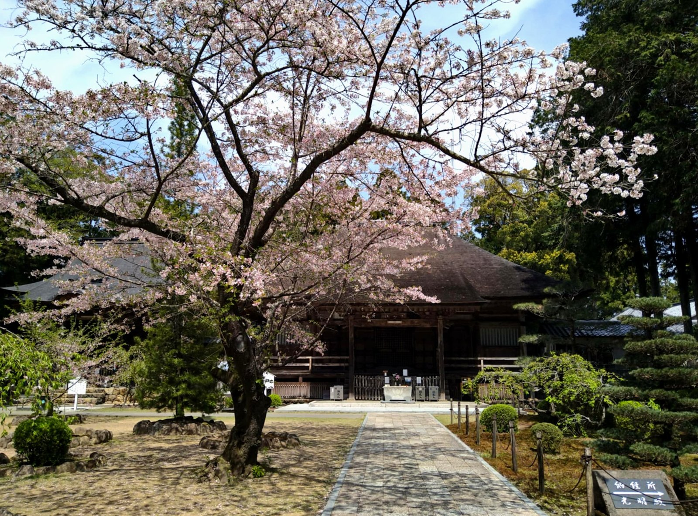
Photo: Araiyasushige · Wikimedia Commons, CC0 Kokubunji (Temple 29), Nankoku
Tosa Kokubunji, the old provincial temple of this region, sits among rice fields with a moss garden and a quiet hall first raised in the eighth century. Here the temples come close together, an easy stretch after the lonely coast. The road carries on from the garden's soft green into the streets of Kochi.
-
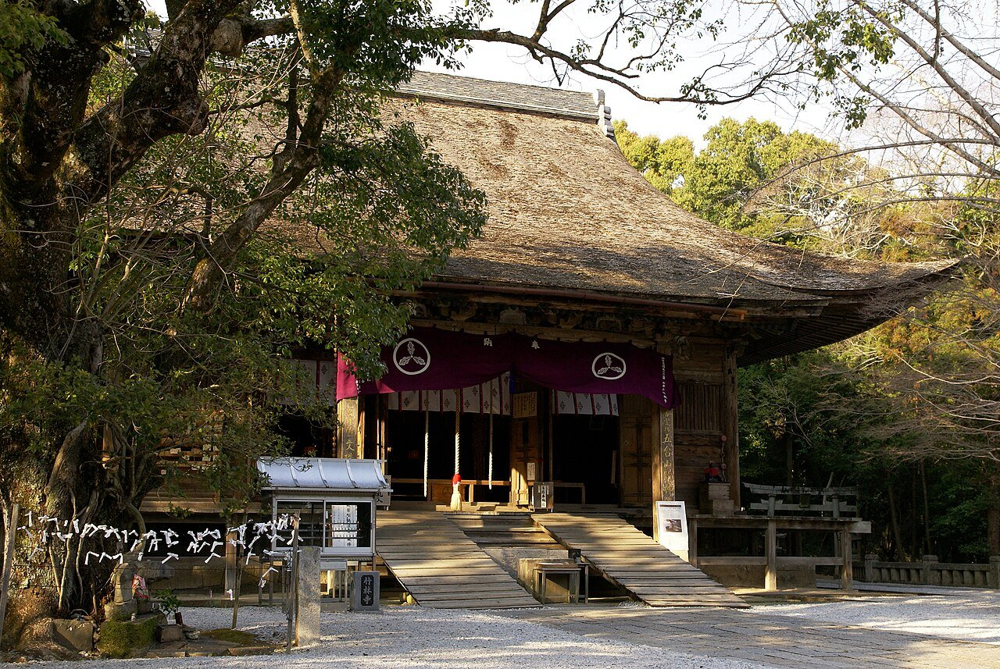
Photo: 663highland · Wikimedia Commons, CC BY 2.5 Chikurinji (Temple 31), Kochi
Above Kochi city, on Mount Godai, stands Chikurinji, the Bamboo Grove Temple, with its elegant five-storey pagoda and famous landscaped garden. Dedicated to Monju, the bodhisattva of wisdom, it is the spiritual heart of Kochi. The prefectural capital marks a third of the way around the island, with the remote western capes still ahead.
-
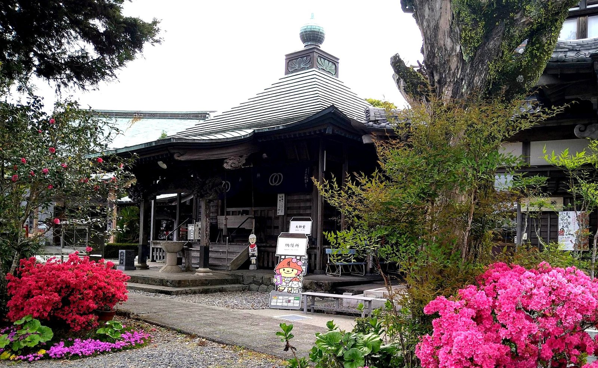
Photo: Araiyasushige · Wikimedia Commons, CC BY-SA 4.0 Tanemaji (Temple 34) and the Niyodo crossing
Tanemaji, the seed-sowing temple, takes its name from a legend that Kukai brought the first rice seed here, and farmers still come to pray for a good harvest. Nearby the clear Niyodo River runs to the sea across a wide green plain, before the road climbs toward the Yokonami ridge.
-
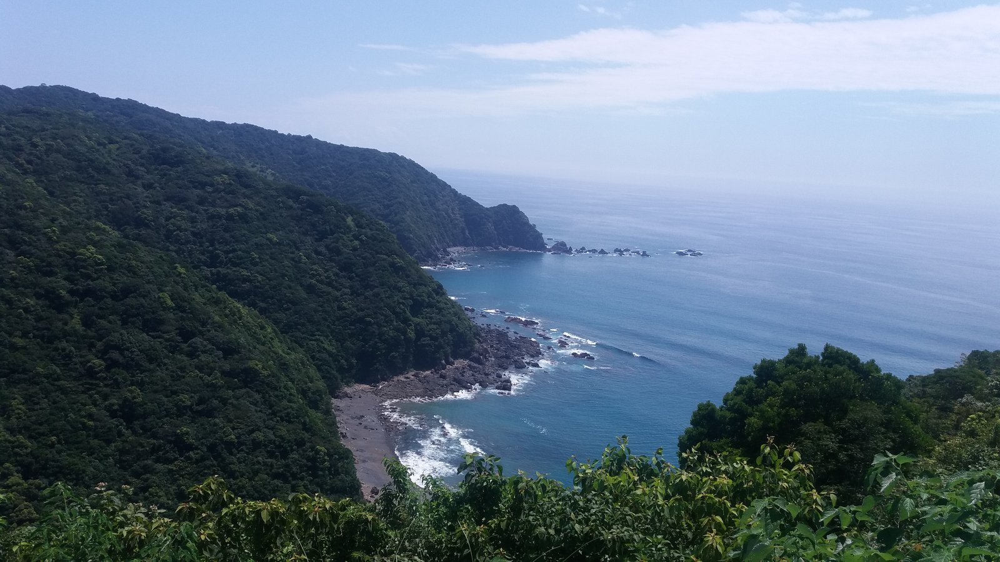
Photo: Cirinsusaki · Wikimedia Commons, CC BY-SA 4.0 Yokonami Skyline ridge
The Yokonami ridge is a long spine of green hills, the open Pacific on one side and the calm inlet of Uranouchi Bay on the other. Here the henro path trades town for forest and sea-wind, a quiet high traverse with a double view of bay and ocean, before dropping down toward Kiyotakiji and Susaki.
-
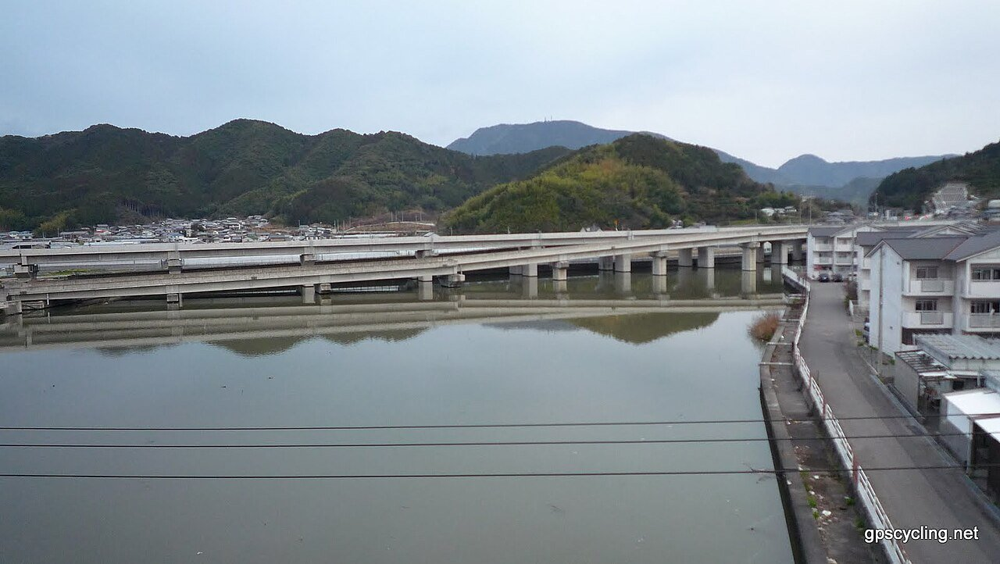
Photo: Yobito KAYANUMA · Wikimedia Commons, CC BY-SA 3.0 Susaki and Shoryuji (Temple 36)
Susaki wraps around a deep bay, a harbour town just past Shoryuji, where a dragon is said to guard the waters. It is the last sizeable town before the long climb inland toward Iwamotoji, and the empty kilometres that follow.
-
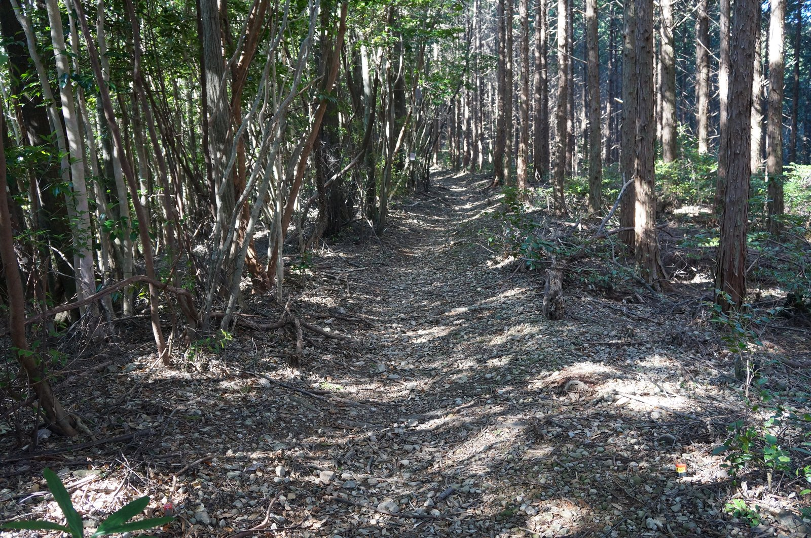
Photo: Reggaeman · Wikimedia Commons, CC BY-SA 3.0 Soegawa valley and the seven slopes
The old mountain henro climbs the Soegawa valley, a string of forested slopes the pilgrims call the seven hills, where moss-grown stones mark the way between hamlets. It is one of the most peaceful woodland sections of the whole route, far from any road noise, before the descent toward the plateau temple of Iwamotoji.
-
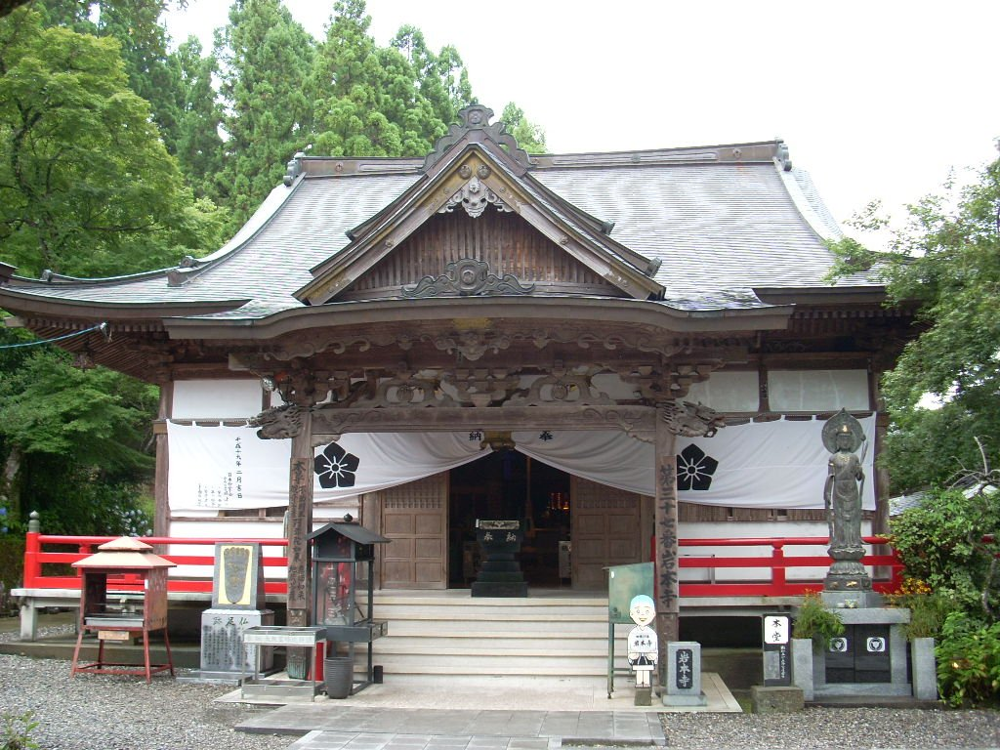
Photo: ja:利用者:A10ml · Wikimedia Commons, CC BY-SA 3.0 Iwamotoji (Temple 37)
Iwamotoji stands in the town of Shimanto, near the clear waters of Japan's last wild river. The ceiling of its main hall carries 575 painted panels added in 1978, a riot of flowers, birds and even Marilyn Monroe, contributed by pilgrims and artists across the country. From here a long coastal walk leads out to the far cape.
-
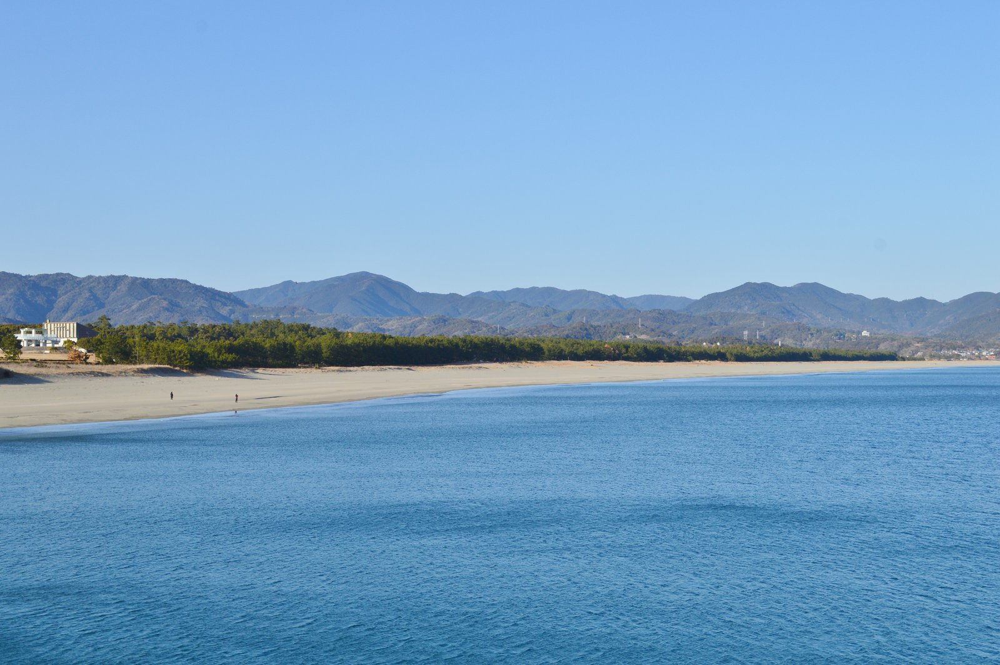
Photo: Saigen Jiro · Wikimedia Commons, CC0 Irino and the Black Pine Grove
On the Tosa coast, Irino spreads behind the long Matsubara pine grove, which shelters a wide beach known for its T-shirt art festival held among the dunes. The dark line of black pines was planted as a windbreak against the storms off the open ocean, before the coast runs on toward distant Cape Ashizuri.
-
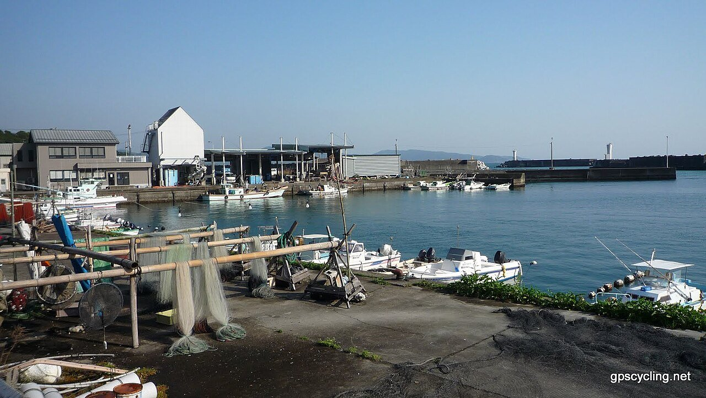
Photo: Yobito KAYANUMA · Wikimedia Commons, CC BY-SA 3.0 Tosashimizu harbour
Tosashimizu is the last town before the cape, a busy fishing port tucked into a sheltered inlet near the southern tip of Shikoku. It is famous for Shimizu saba, mackerel so fresh it is eaten as sashimi right where it lands. Beyond, the road out to Kongofukuji and back runs long and exposed.
-
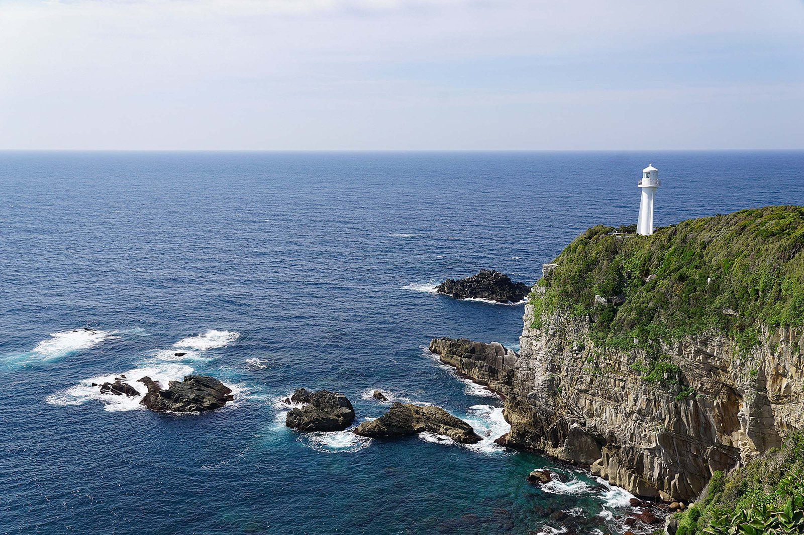
Photo: z tanuki · Wikimedia Commons, CC BY 3.0 Kongofukuji (Temple 38), Cape Ashizuri
At the southernmost tip of Shikoku, on Cape Ashizuri, Kongofukuji looks out over the open ocean toward the Buddhist paradise believed to lie beyond the horizon. The walk here from Temple 37 is among the longest of the whole pilgrimage, some eighty kilometres of headland and sea. Camellias line the cape in winter at the island's far edge.
-
Mihara plateau path
Between the capes rise the Mihara uplands, a high rolling plateau of pasture and woodland where the henro narrows to a true mountain trail. Cattle graze the open ridges and the air cools with the climb away from the coast. Waymarks lead carefully across the high ground before the descent toward Enkoji and Sukumo.
-
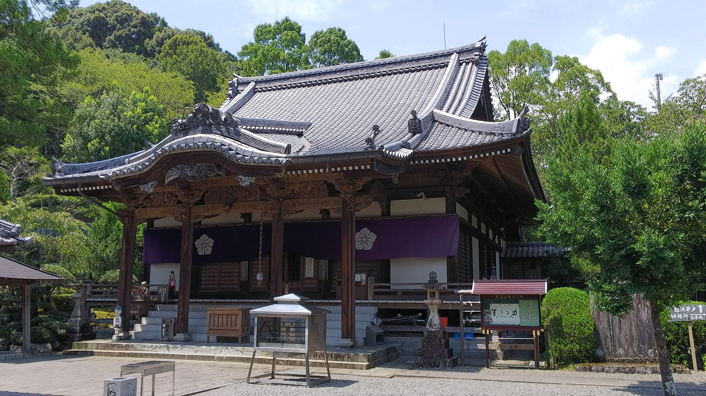
Photo: Reina.otsuki · Wikimedia Commons, CC BY-SA 4.0 Enkoji (Temple 39), Sukumo
Enkoji is the last temple in Kochi, where a stone turtle in the garden recalls a legend of a red sea-turtle that carried a sacred bell to shore. Beyond it lies Sukumo Bay and the border into Ehime, the next of the four provinces, and the road on toward the quiet temple of Kanjizaiji.
-
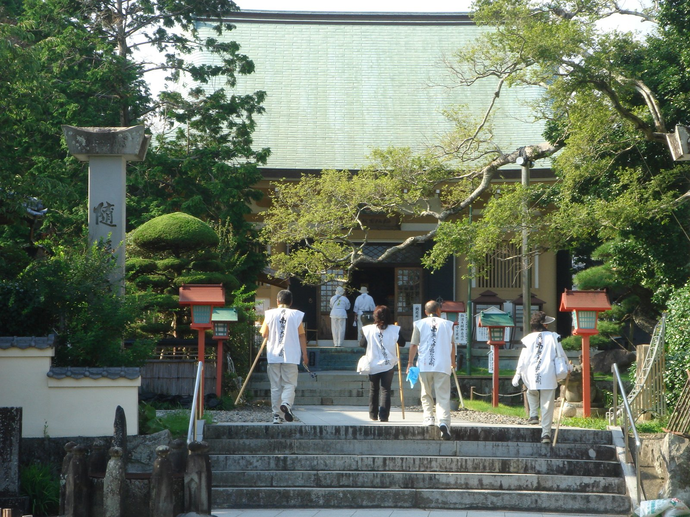
Photo: Unknown · Wikimedia Commons, Public domain Kanjizaiji (Temple 40)
Ehime begins at Kanjizaiji in Ainan, first of the prefecture's temples and the start of the stage of enlightenment. The hardest, loneliest country now lies behind. Ahead wait castle towns, citrus orchards and the gentle Seto Inland Sea, and the new province opens with lighter going.
-
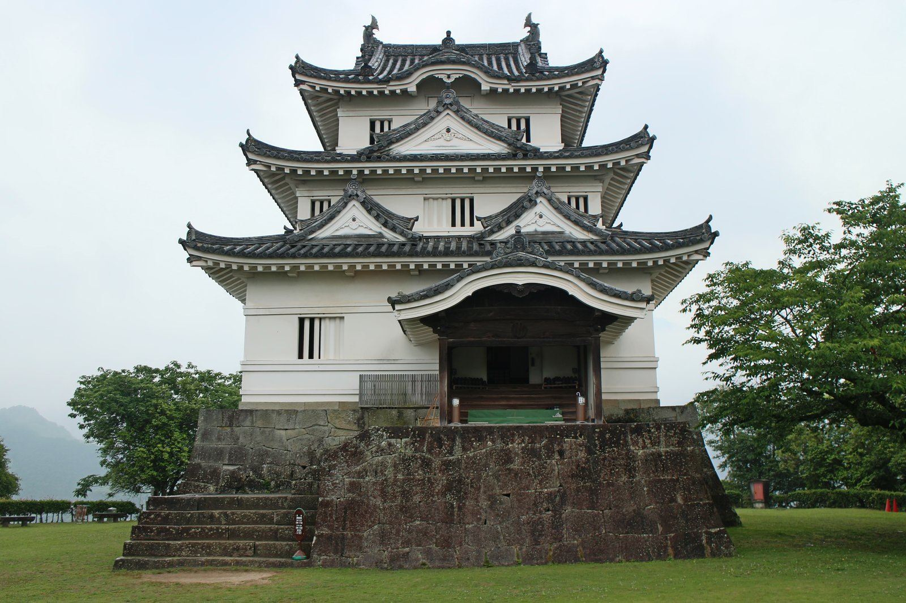
Photo: Suicasmo · Wikimedia Commons, CC BY-SA 4.0 Uwajima and its castle
Uwajima is a castle town on a deep blue bay, where one of Japan's few surviving original keeps stands small and dark on its wooded hill. It is known for pearl farming and for tai-meshi, sea bream served over rice. From the castle the route follows the coast and valleys onward toward Meisekiji.
-
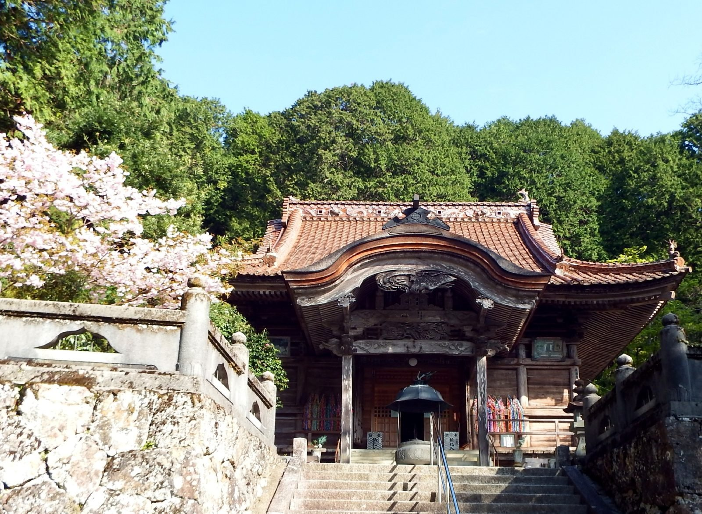
Photo: Dokudami · Wikimedia Commons, CC BY-SA 4.0 Meisekiji (Temple 43) and Ozu
Deep forest and the sound of a stream surround Meisekiji at the foot of the mountains, its great gate guarded by towering trees. From here the route bends toward Ozu, an old river town sometimes called a little Kyoto for its riverside houses and cormorant fishing, before the long inland climb toward Iwayaji.
-
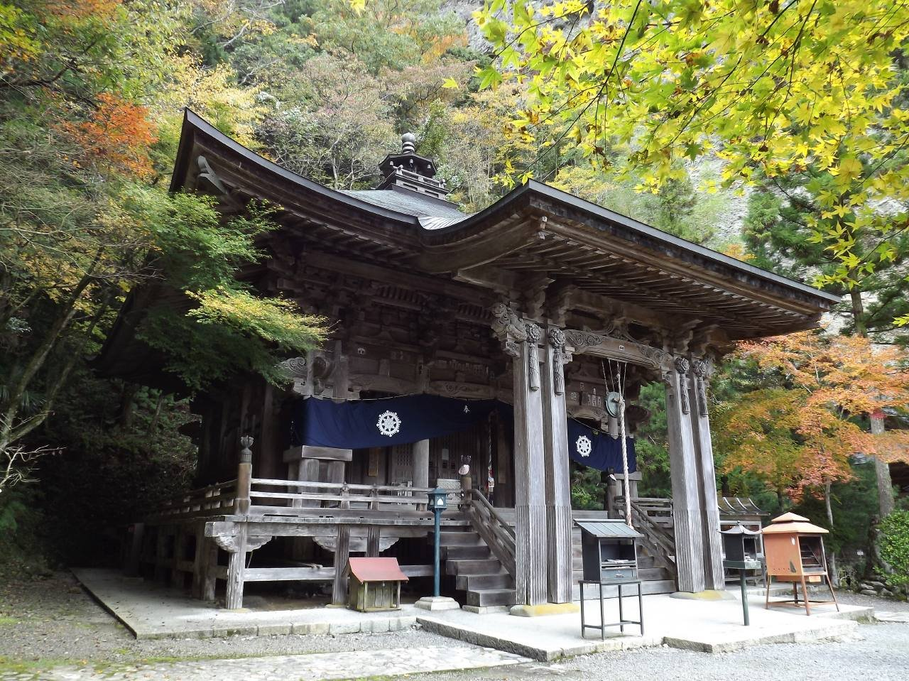
Photo: Dokudami · Wikimedia Commons, CC BY-SA 4.0 Iwayaji (Temple 45)
Iwayaji, the Rock Cave Temple, is set against a sheer cliff face honeycombed with caves high in the mountains of Kumakogen. Pilgrims scale chains and ladders to reach hermit caves where ascetics once meditated in the living rock. The hall seems to grow out of the mountain itself. Few temples feel as remote, or as holy.
-
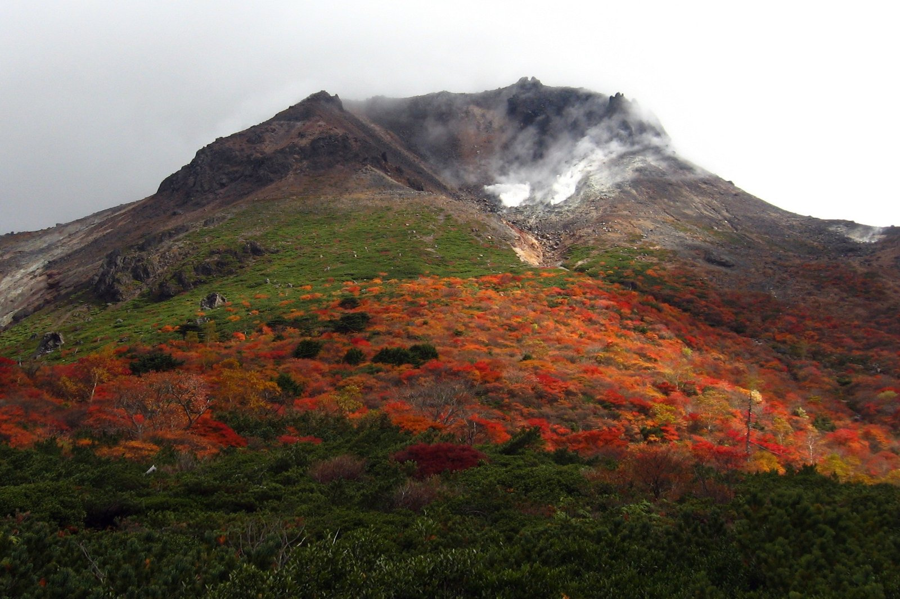
Photo: uraomote_yamaneko · Wikimedia Commons, CC BY-SA 3.0 Kuma Kogen highland
The Kuma plateau is a cool upland of rivers and farms ringed by the mountains of central Ehime, a welcome stretch of high green country after the cliffs of Iwayaji. The clear Omogo gorge nearby is one of the finest river canyons in western Japan, before the valley road drops toward the city of Matsuyama.
-
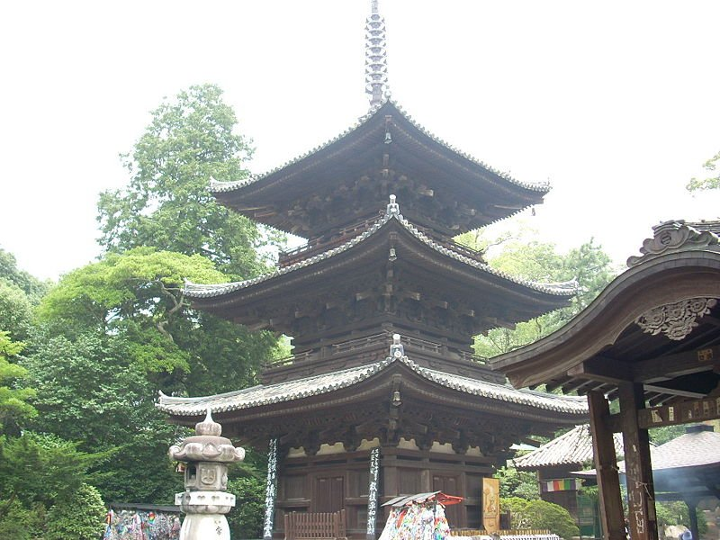
Photo: ja:利用者:A10ml · Wikimedia Commons, CC BY-SA 3.0 Ishiteji (Temple 51), Matsuyama
Beside the hot springs of Matsuyama stands Ishiteji, the Stone Hand Temple, its three-storey pagoda and gate a National Treasure of medieval Kamakura craft. The name recalls a legend of a reborn pilgrim found clutching a stone, a story bound up with the very founding of the Ohenro. The famous Dogo Onsen waits nearby as the walk turns toward home.
-
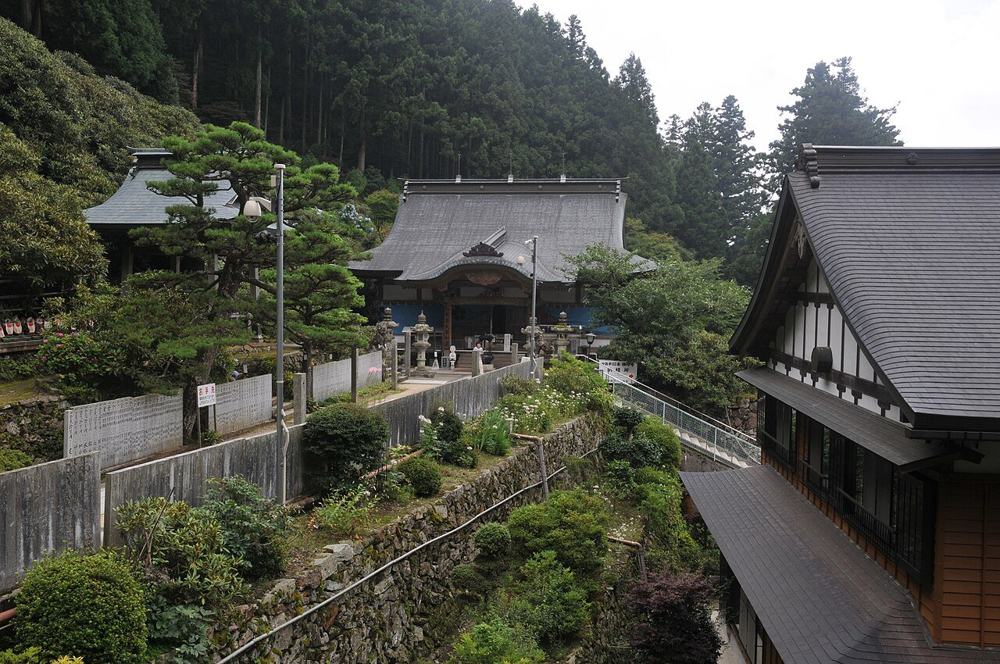
Photo: Reggaeman · Wikimedia Commons, CC BY-SA 3.0 Yokomineji (Temple 60)
At 750 metres on the flank of Mount Ishizuchi, the highest mountain in western Japan and a sacred peak of mountain ascetics, stands Yokomineji. One of the most demanding temples of the later stage, it sits deep in cedar forest reached by a long climb through thin, clean air. Below wait the springs of Saijo and Maegamiji at the holy mountain's foot.
-
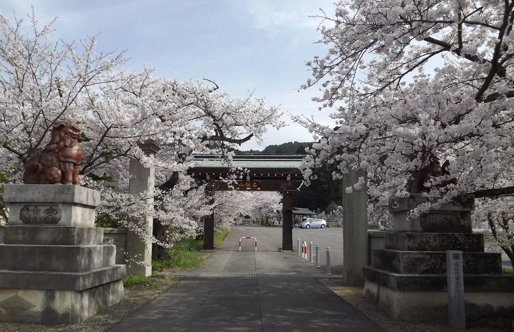
Photo: Dokudami · Wikimedia Commons, CC BY-SA 3.0 Maegamiji (Temple 64), Saijo
Maegamiji sits at the foot of Mount Ishizuchi, the highest peak in western Japan, a holy mountain whose worship is woven into the temple itself. Saijo is famous for its uchinuki, springs of pure water that bubble up all over the town. From here the way turns toward the last great climb of Sankakuji and Unpenji.
-
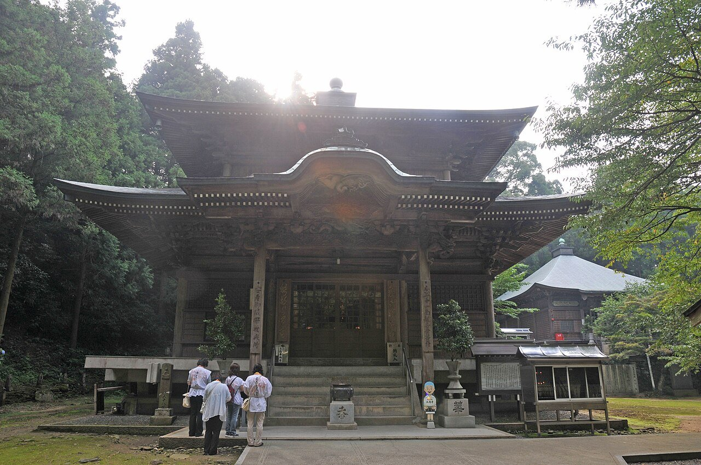
Photo: Reggaeman · Wikimedia Commons, CC BY-SA 3.0 Sankakuji (Temple 65)
Sankakuji, the last temple in Ehime, stands high on a forested slope where a triangular altar gives it its name and pilgrims pray for protection from misfortune. From its terrace the patchwork plain runs toward the mountains of Kagawa. Old cedars shade the grounds before the steep haul to the highest temple of all.
-
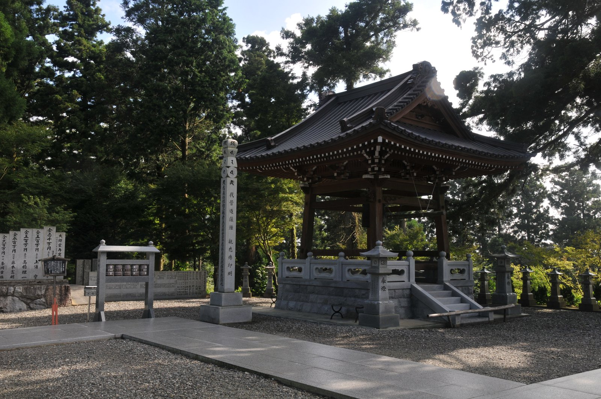
Photo: Reggaeman · Wikimedia Commons, CC BY-SA 3.0 Unpenji (Temple 66), highest temple
At over nine hundred metres, Unpenji is the highest of all eighty-eight temples, wrapped in mist among ranks of stone arhat statues that seem to watch from the moss. Its name means temple of the rolling clouds, and on a clear day the whole Inland Sea spreads out far below. Beyond lies the long descent into Kagawa, the final province.
-
Iyadaniji (Temple 71), Mino
Iyadaniji is carved into a cliff face where Buddha images are cut straight into the living rock and a long stone stairway rises into the gorge. Pilgrims have tucked coins and prayers into the crevices of the cliff for centuries. Ahead, the plain runs on toward Zentsuji, the birthplace of Kukai.
-
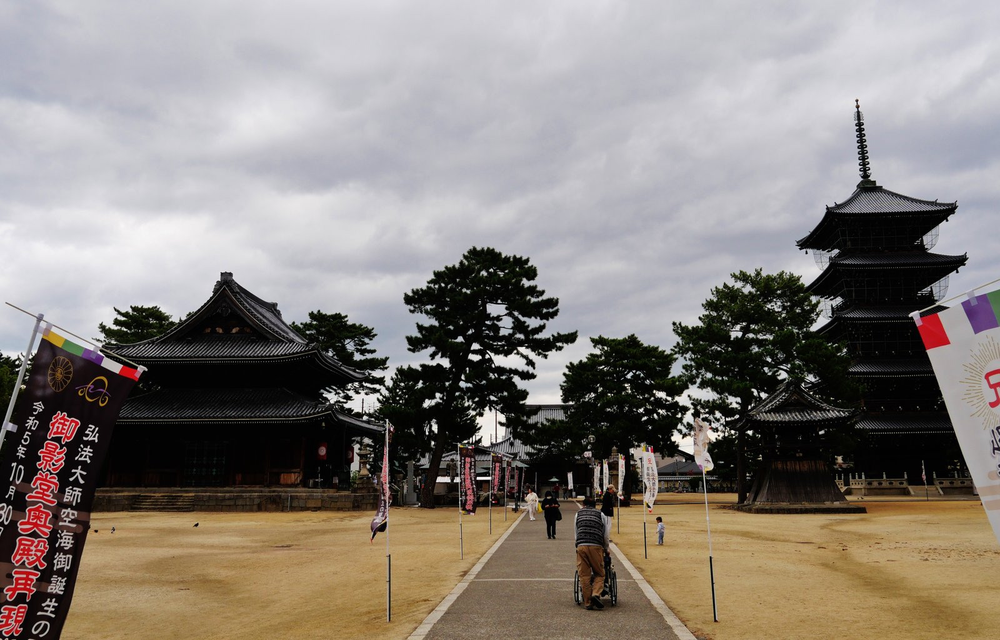
Photo: Zairon · Wikimedia Commons, CC BY 4.0 Zentsuji (Temple 75)
Zentsuji is the grandest temple on the pilgrimage and the birthplace of Kukai himself, born here in 774 and later honoured as Kobo Daishi. A dark underground passage runs beneath the Mieido, walked in pilgrim's blackness with one hand on the wall. A great five-storey pagoda and ancient camphor trees fill the precinct where the saint who shaped this whole road first drew breath.
-
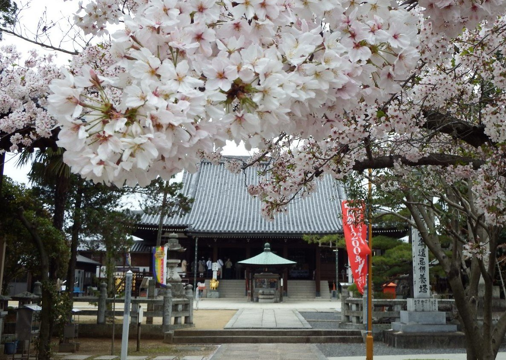
Photo: Dokudami · Wikimedia Commons, CC BY-SA 4.0 Konzoji (Temple 76) and Marugame plain
The flat Marugame plain leads to Konzoji, a temple linked to the family of Kukai himself, with the conical Sanuki Fuji rising sharply on the skyline. This is sanuki udon country, and steam drifts from the noodle shops along the road. The easy plain runs on from here toward Yashima's tableland.
-
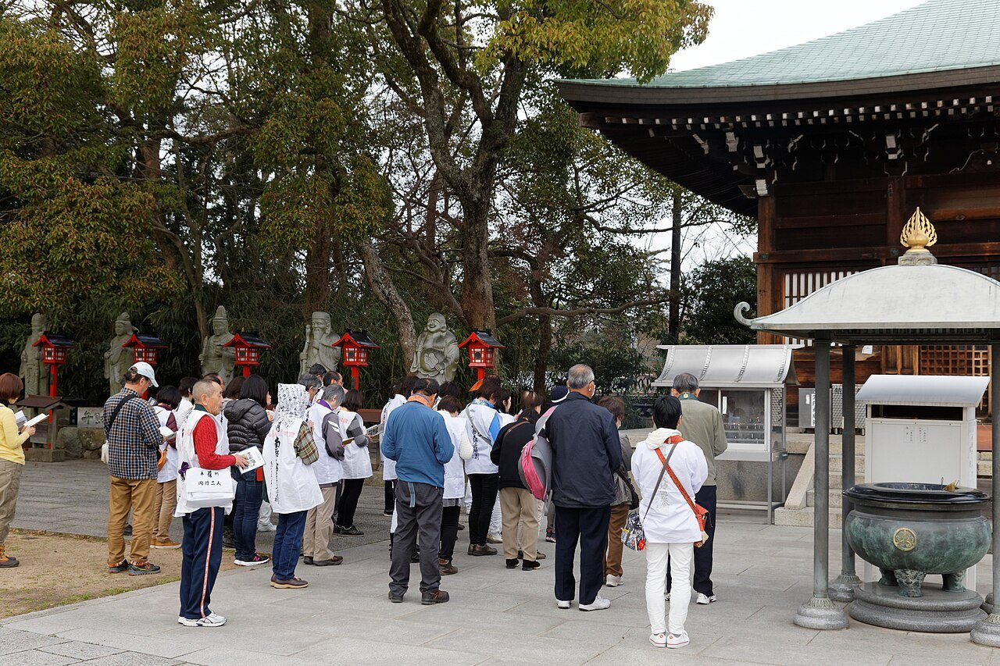
Photo: KimonBerlin · Wikimedia Commons, CC BY-SA 2.0 Yashimaji (Temple 84), Takamatsu
Above Takamatsu rises the flat-topped plateau of Yashima, and on it stands Yashimaji, looking out over the Seto Inland Sea and the bay where the Genji and Heike clans fought their famous medieval battle in 1185. The view of islands scattered across calm water is one of the finest in Shikoku. Only a handful of temples remain. The end is close now.
-
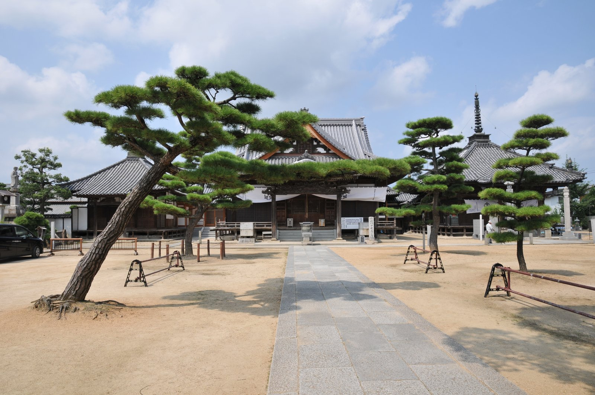
Photo: Reggaeman · Wikimedia Commons, CC BY-SA 3.0 Nagaoji (Temple 87), Sanuki
On the Sanuki plain, Nagaoji is the second-to-last temple, where pilgrims traditionally leave their walking staff to be blessed before the final mountain climb. A great spreading nettle tree shades the courtyard. Only the wooded ascent to Okuboji and the close of the circle now remain.
-
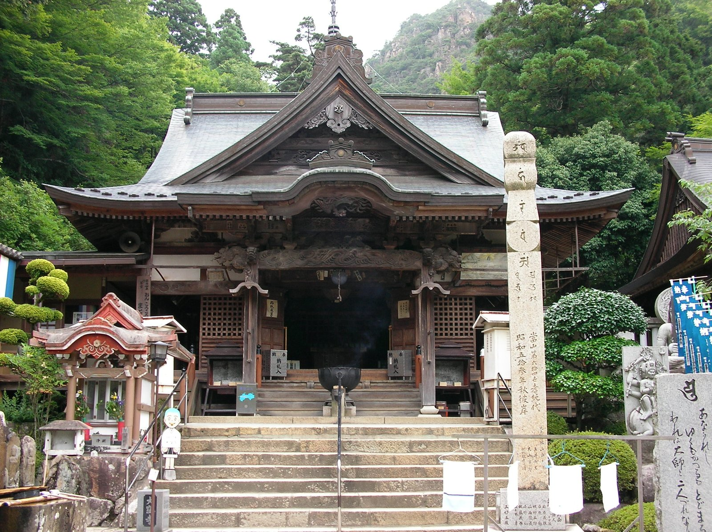
Photo: ウランボルグ · Wikimedia Commons, CC BY-SA 3.0 Okuboji (Temple 88)
High in the wooded mountains of Sanuki stands Okuboji, the eighty-eighth and final temple, where pilgrims lay down the staff carried since Temple 1, its work complete. Twelve hundred kilometres around the whole island of Shikoku close here, every temple visited, the great circle joined end to end. The hall hangs thick with the staffs of all who walked before, the Ohenro finished.
Walking the Shikoku Pilgrimage
Your watch is already counting these steps. Watch Walks spends them on the Shikoku Pilgrimage, all 1,200 km of it, and hands you each landmark as you reach it. There's no route recording, no account and no ads. The Inca Trail is free; this one is a one-time purchase with no subscription.
Other trails in Asia
- Annapurna Circuit 128 km · Nepal
- Jordan Trail 675 km · Jordan
- Lycian Way 540 km · Turkey
- Manaslu Circuit 177 km · Nepal
- Nakasendo Way 530 km · Japan
- Kumano Kodo 46 km · Japan